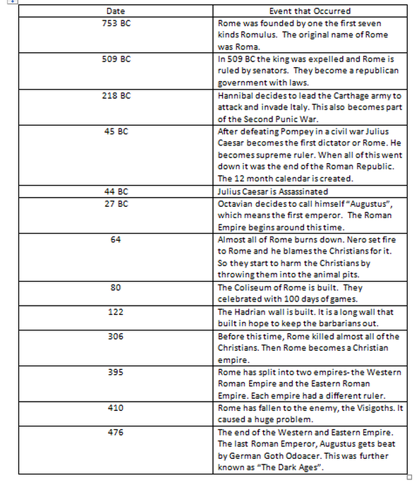

- 753 BC - The city of Rome is founded. Legend has it that the twin sons of Mars, the god of war, named Romulus and Remus founded the city. Romulus killed Remus and became ruler of Rome and named the city after himself. Rome was ruled by kings for the next 240 years.
- 509 BC - Rome becomes a republic. The last king is overthrown and Rome is now ruled by elected officials called senators. There is a constitution with laws and a complex republican government.
- 218 BC - Hannibal invades Italy. Hannibal leads the Carthage army in his famous crossing of the Alps to attack Rome. This is part of the Second Punic war.
- 73 BC - Spartacus the gladiator leads the slaves in an uprising.
- 45 BC - Julius Caesar becomes the first dictator of Rome. Caesar makes his famous Crossing of the Rubicon and defeats Pompey in a civil war to become the supreme ruler of Rome. This signals the end of the Roman Republic.
- 44 BC - Julius Caesar is assassinated on the Ides of March by Marcus Brutus. They hope to bring back the republic, but civil war breaks out.
- 27 BC - The Roman Empire begins as Caesar Augustus becomes the first Roman Emperor.
- 64 AD - Much of Rome burns. Legend has it that Emperor Nero watched the city burn while playing a lyre.
- 80 AD - The Colosseum is built. One of the great examples of Roman engineering is finished. It can seat 50,000 spectators.
- 121 AD - The Hadrian Wall is built. To keep out the barbarians a long wall is built across northern England.
- 306 AD - Constantine becomes Emperor. Constantine would convert to Christianity and Rome would become a Christian empire. Prior to this Rome persecuted the Christians.380 AD - Theodosius I declares Christianity to be the sole religion of the Roman Empire.
- 395 AD - Rome splits into two empires.
- 410 AD - The Visigoths sack Rome. This is the first time in 800 years that the city of Rome has fallen to an enemy.
- 476 AD - The end of the Western Roman Empire and the fall of Ancient Rome. The last Roman Emperor Romulus Augustus is defeated by the German Goth Odoacer. This signals the start of the Dark Ages in Europe.
- 1453 AD - The Byzantine Empire(The eastern part of the roman empire) comes to an end as it falls to the Ottoman Empire.

Home